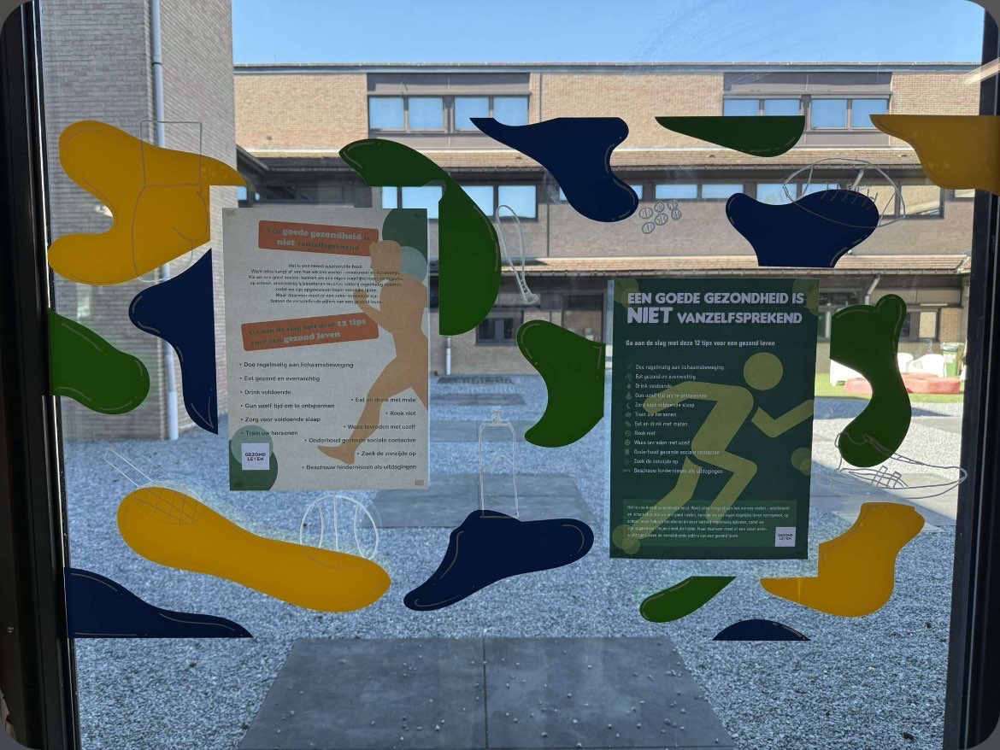

Dag van de wetenschap
Voor dit project kreeg ik de kans om een groot bord maken voor dag van de wetenschap dit bord was 2
meter op 2 meter. Eerst heb ik
het ontwerp is gemaakt door een klasgenoot maar ik heb het plotklaar gemaakt om het dan in vinyl te
printen en aan te brengen op
de platen. De uitdaging hier
was het ontwerp maken ik heb mij hier heel hard verdiept in illustrator skills, toen het
snijwerk moest gebeuren kwam de
grootste uitdaging want dit zijn eigenlijk allemaal kleine plakkers die uitgemeten moesten
worden en op een specifieke
manier moest geplakt worden voor weersomstandigheden.
#illustrator #vinyl #plottenEnPlakken
Lees meer

PE Photoshop
Voor het vak graphic skills kreeg ik de kans om mijn photoshop skills op proef stellen. We hadden 7
weken les gekregen over photoshop en daarna moesten we zelf een opdracht namaken en op de
juiste manier indienen.
De uitdaging hier was om alle technieken die we geleerd hadden toe te passen in 1 project.
Ik heb hier heel veel bijgeleerd over photoshop en de verschillende tools die je kan
gebruiken.
Ik ben eerst beginnen analyseren en dan stapjes beginnen opschrijven over wat ik moet doen.
dan heb ik stapsgewijs deze opdracht tot een succesvol einde gebracht.
#photoshop #graphicdesign
Lees meer

Pokemon Kaarten hunt
Voor dit persoonlijke project ben ik begonnen met het hunten van de Mewtwo-kaart in Pokémon Rivals. Dit
deed ik vooral
omdat het me interesseerde en omdat ik het leuk vond om hier in mijn vrije tijd mee bezig te zijn. Er
zat geen vaste
aanpak of specifieke strategie achter, het ging vooral om het proces en het doorzetten.
De grootste uitdaging was het geduldig blijven, aangezien hunten vaak herhalend is en geen directe
vooruitgang laat
zien. Toch bleef ik ermee bezig omdat ik het leuk vond en omdat het voor mij een manier was om even te
ontspannen naast
andere projecten.
#Charizard #pokemon
Lees meer

Bestickering raam
Voor het vak Design kreeg ik de opdracht om een raamsticker te ontwerpen. Het ontwerp moest aan een
aantal criteria
voldoen. Zo moest het bestaan uit organische vormen en een sportthema hebben. Daarnaast moest er een
frame in het
ontwerp verwerkt worden, zodat er twee flyers, posters of papieren in geplaatst konden worden.
#illustrator #frames #raamtekening
Lees meer

Disney tekening
Met de klas bezochten we een tentoonstelling van een fotograaf die wilde dieren fotografeerde. Naar
aanleiding van deze
tentoonstelling kregen we de opdracht om zelf een dier te kiezen om te tekenen. Vervolgens moesten we
deze tekening
uitwerken in Adobe Illustrator en er een sticker van maken die op een raam geplakt kon worden.
#illustrator #handtekening
Lees meer